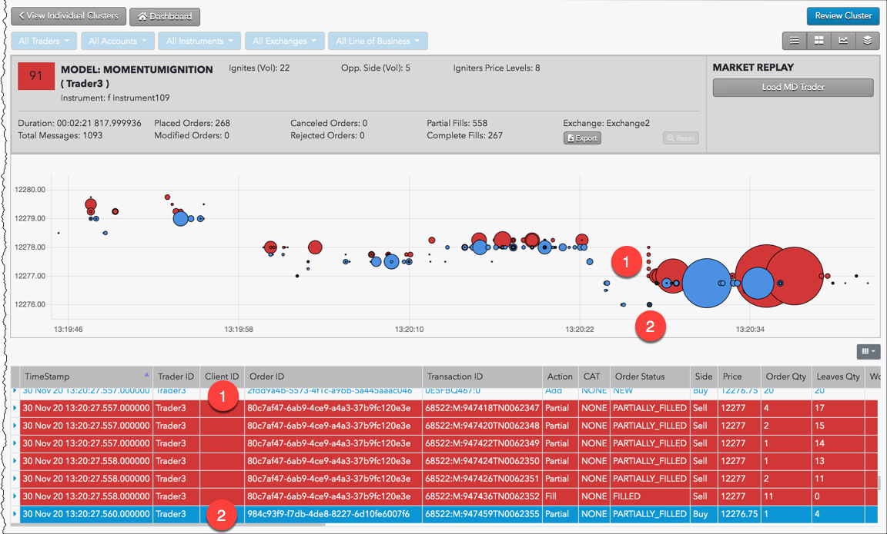
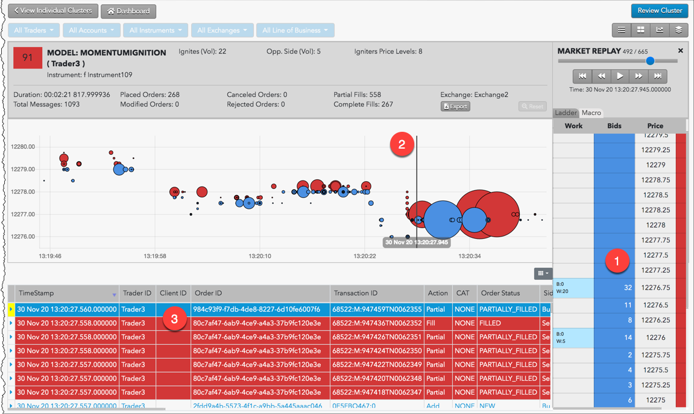

Momentum ignition trading patterns attempt to create directional price movement and then to capitalize on the result. Typically, momentum ignition is identified by a series of aggressive orders submitted in a short time span in an attempt to trigger resting stop orders, which then cause pre-placed orders to be executed at a profit by the ignited price movement.
To detect potential momentum ignition, TT Score searches for specific patterns of fill activity by the same trader who submitted the aggressive orders. It looks for traders who place multiple orders that immediately lift offers or hit bids within a short time frame (called aggressive orders). For each of these aggressive orders, TT Score identifies fill prices for orders executed at multiple price levels and whether the changing fill prices trend in same side as the aggressive orders. Finally, it determines whether a fill was received too quickly on the opposite side of the market from the aggressive orders.
The score assigned is based on a sliding scale between 0-100, based on the relationship between the aggressive order fill quantities and the profit-taking order fill quantities.
The Scorecard Metrics section measures the following statistics related to momentum ignition:
For example, if the Igniter Price Levels and the Ignites (Vol) metrics display large values, this indicates that the trader may have been attempting to ignite a price movement in a particular direction (buy or sell) in order to mislead other market participants or to create an artificial price. The Opp. Side (Vol) is a good indicator of whether or not the trader received advantageous fills on orders opposite the igniter orders that the trader would not have otherwise received without intentionally or recklessly sparking the price movement.
When investigating Momentum Ignition clusters with TT Score, you should focus on the:
Use the Cluster Scorecard to get a closer look at the activity that triggered the high cluster score. The pressure chart on the scorecard provides visual clues about the potential suspect trading pattern. The order audit trail data on the scorecard can then be used to verify order information and timing of the activity. The following example shows trading activity identified as potential Momentum Ignition.

In this example:
The activity can then also be replayed on the Ladder view tool and viewed on the Macro view. For example, you can click Market Replay to show how the orders interacted with the market at the various price levels.

In this example: